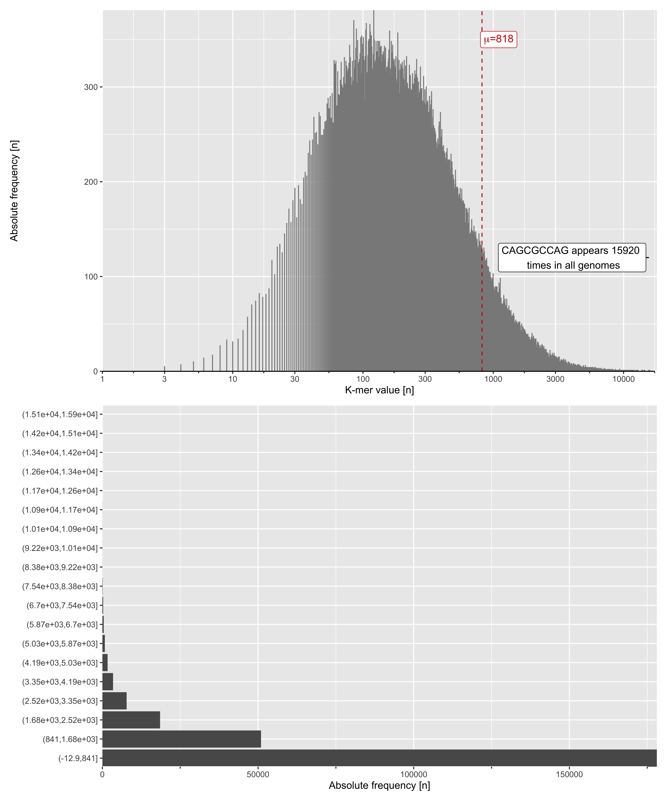

![]()
Libraries
Downloading genomes
The first steps of this challenge requires genome data. A very practical way to download data programmatically is to use ncbi-genome-downlad program. Here a you can see how to use it:
Then using we will download complete genomes from the Pseudomonas syringae and drop them into the Genome folder. In the following line we select ~37 genomes from the organism.
ngd -n -s refseq -F fasta --genera "Pseudomonas syringae" -l complete bacteriaConsidering the following 47 assemblies for download:
GCF_004006335.1 Pseudomonas syringae inb918
GCF_014524645.1 Pseudomonas syringae CAS02
GCF_016694755.2 Pseudomonas syringae BIM B-268
GCF_018388485.1 Pseudomonas syringae KF529
GCF_018388505.1 Pseudomonas syringae Susan762
GCF_018388525.1 Pseudomonas syringae U643
GCF_018394375.1 Pseudomonas syringae Susan2139
GCF_023278085.1 Pseudomonas syringae PA-2-9E
GCF_900235815.1 Pseudomonas syringae CFBP3840
GCF_900289125.1 Pseudomonas syringae CFBP 2116
GCF_002905815.2 Pseudomonas syringae pv. syringae Pss9097
GCF_023277945.1 Pseudomonas syringae pv. syringae Pss9644
GCF_900235825.1 Pseudomonas syringae pv. syringae CFBP4215
GCF_900235865.1 Pseudomonas syringae pv. syringae CFBP2118
GCF_002966555.1 Pseudomonas syringae pv. tomato B13-200
GCF_009800225.1 Pseudomonas syringae pv. tomato delta X
GCF_016599655.1 Pseudomonas syringae pv. maculicola MAFF 302723
GCF_001913215.1 Pseudomonas syringae pv. actinidiae ICMP 20586
GCF_001913235.1 Pseudomonas syringae pv. actinidiae NZ-47
GCF_002024285.1 Pseudomonas syringae pv. actinidiae CRAFRU 12.29
GCF_002024305.1 Pseudomonas syringae pv. actinidiae CRAFRU 14.08
GCF_002763655.1 Pseudomonas syringae pv. actinidiae MAFF212063
GCF_003665415.1 Pseudomonas syringae pv. actinidiae P220
GCF_023167685.1 Pseudomonas syringae pv. actinidiae MAFF613020
GCF_022557255.1 Pseudomonas syringae pv. tagetis ICMP 4091
GCF_003047185.1 Pseudomonas syringae pv. atrofaciens LMG5095
GCF_001482725.1 Pseudomonas syringae pv. lapsa ATCC 10859
GCF_000012245.1 Pseudomonas syringae pv. syringae B728a B728a
GCF_000007805.1 Pseudomonas syringae pv. tomato str. DC3000 DC3000
GCF_022557235.1 Pseudomonas syringae pv. helianthi LMG 5067
GCF_900235905.1 Pseudomonas syringae group genomosp. 3 CFBP6411
GCF_900235885.1 Pseudomonas syringae pv. cerasicola CFBP6109
GCF_000145825.2 Pseudomonas syringae Cit 7 Cit 7
GCF_000145845.2 Pseudomonas syringae pv. maculicola str. ES4326 ES4326
GCF_900235835.1 Pseudomonas syringae pv. avii CFBP3846
GCF_000648735.3 Pseudomonas syringae pv. actinidiae ICMP 18884 ICMP 18884
GCF_000344335.2 Pseudomonas syringae pv. actinidiae ICMP 9853 ICMP 9853
GCF_000344355.2 Pseudomonas syringae pv. actinidiae ICMP 18708 ICMP 18708
GCF_000344475.3 Pseudomonas syringae pv. actinidiae str. Shaanxi_M228 Shaanxi_M228
GCF_000988485.1 Pseudomonas syringae pv. syringae B301D B301D
GCF_000988395.1 Pseudomonas syringae pv. syringae HS191 HS191
GCF_001281365.1 Pseudomonas syringae UMAF0158 UMAF0158
GCF_000452705.1 Pseudomonas syringae CC1557 CC1557
GCF_000452605.2 Pseudomonas syringae CC440 CC440
GCF_000452565.2 Pseudomonas syringae UB303 UB303
GCF_000452525.3 Pseudomonas syringae USA011 USA011
GCF_000452445.2 Pseudomonas syringae pv. pisi str. PP1 PP1ngd -s refseq\
-F fasta\
--genera "Pseudomonas syringae"\
-l complete\
--flat-output bacteria\
-o Data/Genomes
gzip -d Data/Genomes/*Filenames cleaning
python ~/Programs/Bioinf_tools/bit-dedupe-fasta-headers.py -husage: bit-dedupe-fasta-headers.py [-h] -i INPUT_FASTA [-o OUTPUT_FASTA_NAME]
This script will append a number to headers if that exact ID has already
appeared in the fasta file. For version info, run `bit-version`.
optional arguments:
-h, --help show this help message and exit
-o OUTPUT_FASTA_NAME, --output_fasta_name OUTPUT_FASTA_NAME
Output fasta file (default: "Renamed.fasta").
required arguments:
-i INPUT_FASTA, --input_fasta INPUT_FASTA
Starting fasta filefor F in Genomes/*.fna ; do
N=$(basename $F .fna) ;
python /Users/camilogarcia/Programs/Bioinf_tools/bit-dedupe-fasta-headers.py -i $F -o $N_renamed.mfa ;
donefor F in Genomes/*.fna; do
mv -- "$F" \
"$(awk 'NR==1{printf("%s_%s_%s\n",$2,$3,substr($1,2));exit}' "$F")".fna
doneK-mers scanning on genomes

Script help & parallel execution
python ~/Projects/Biolibrary/kmer_count.py -husage: kmer_count.py [-h] [-k K] input output
Count the frecuency of a k-mer set given its size (k) along a genome or a set
of genomes
positional arguments:
input Path to input fasta file
output Path to put file/folder output
optional arguments:
-h, --help show this help message and exit
-k K size of k-mer (default: 1)l ~/Projects/Random/Genomes/Pseudomonas_syringae_NZ* | parallel "python kmer_count.py -k 2 {} {/.}.csv"Pseudomonas_syringae_NZ_CP005969.1_9mers.csv
Pseudomonas_syringae_NZ_CP005970.1_9mers.csv
Pseudomonas_syringae_NZ_CP006256.1_9mers.csv
Pseudomonas_syringae_NZ_CP007014.1_9mers.csv
Pseudomonas_syringae_NZ_CP011972.2_9mers.csv
Pseudomonas_syringae_NZ_CP012179.1_9mers.csv
Pseudomonas_syringae_NZ_CP013183.1_9mers.csv
Pseudomonas_syringae_NZ_CP017007.1_9mers.csv
Pseudomonas_syringae_NZ_CP017009.1_9mers.csv
Pseudomonas_syringae_NZ_CP018202.1_9mers.csv
Pseudomonas_syringae_NZ_CP019730.1_9mers.csv
Pseudomonas_syringae_NZ_CP019732.1_9mers.csv
Pseudomonas_syringae_NZ_CP019871.1_9mers.csv
Pseudomonas_syringae_NZ_CP024646.1_9mers.csv
Pseudomonas_syringae_NZ_CP024712.1_9mers.csv
Pseudomonas_syringae_NZ_CP026568.1_9mers.csv
Pseudomonas_syringae_NZ_CP028490.1_9mers.csv
Pseudomonas_syringae_NZ_CP032459.1_9mers.csv
Pseudomonas_syringae_NZ_CP032631.1_9mers.csv
Pseudomonas_syringae_NZ_CP032871.1_9mers.csv
Pseudomonas_syringae_NZ_CP034078.1_9mers.csv
Pseudomonas_syringae_NZ_CP045799.1_9mers.csv
Pseudomonas_syringae_NZ_CP047073.1_9mers.csv
Pseudomonas_syringae_NZ_CP047260.1_9mers.csv
Pseudomonas_syringae_NZ_CP047267.1_9mers.csv
Pseudomonas_syringae_NZ_CP067024.1_9mers.csv
Pseudomonas_syringae_NZ_CP068034.1_9mers.csv
Pseudomonas_syringae_NZ_LT962480.1_9mers.csv
Pseudomonas_syringae_NZ_LT962481.1_9mers.csv
Pseudomonas_syringae_NZ_LT963391.1_9mers.csv
Pseudomonas_syringae_NZ_LT963402.1_9mers.csv
Pseudomonas_syringae_NZ_LT963408.1_9mers.csv
Pseudomonas_syringae_NZ_LT963409.1_9mers.csv
Pseudomonas_syringae_NZ_LT985192.1_9mers.csvImporting & cleaning
# posts/2021-01-25-Kmer-analysis/
files <- dir_ls("data/Kmers")
dataset <- files |>
map_df(read_csv)
dataset# A tibble: 20,709,376 × 3
...1 kmer kmer_value
<dbl> <chr> <dbl>
1 0 AAAAAAAAA 5
2 1 AAAAAAAAC 21
3 2 AAAAAAAAT 17
4 3 AAAAAAAAG 17
5 4 AAAAAAACA 23
6 5 AAAAAAACC 44
7 6 AAAAAAACT 15
8 7 AAAAAAACG 29
9 8 AAAAAAATA 26
10 9 AAAAAAATC 40
# … with 20,709,366 more rowstotal <- dataset |>
mutate(kmer = as_factor(kmer)) |>
group_by(kmer) |>
summarise(total = sum(kmer_value))
summary(total) |>
kable()| kmer | total | |
|---|---|---|
| AAAAAAAAA: 1 | Min. : 3 | |
| AAAAAAAAC: 1 | 1st Qu.: 235 | |
| AAAAAAAAT: 1 | Median : 509 | |
| AAAAAAAAG: 1 | Mean : 819 | |
| AAAAAAACA: 1 | 3rd Qu.: 1047 | |
| AAAAAAACC: 1 | Max. :15920 | |
| (Other) :262138 | NA |
K-mers counts frequency plot
kmers_plot <- total |>
ggplot(aes(total)) +
geom_histogram(stat = "count", color = "#8A8A8A") +
geom_label_repel(aes(label = paste(kmer, "appears", max(total), "\n times in all genomes"), y = 120), data = . %>% filter(total == max(total)), min.segment.length = 0, segment.colour = "black") +
geom_vline(xintercept = mean(total$total), linetype = "dashed", color = "#C60000") +
annotate("label", label = expression(paste(mu, "=", 818)), x = 1100, y = 350, size = 4, colour = "#C60000") +
scale_x_continuous(guide = "prism_offset_minor", trans = "log10", limits = c(1, 18000), n.breaks = 10) +
theme(
axis.line.x = element_line(color = "black")
) +
labs(
x = "K-mer value [n]",
y = "Absolute frequency [n]"
) +
coord_cartesian(expand = F)
kmers_plot_intervals <- total |>
mutate(intervals = cut(total, breaks = 19)) |>
ggplot(aes(y = intervals)) +
geom_histogram(stat = "count") +
scale_x_continuous(guide = "prism_offset_minor") +
theme(
axis.line.x = element_line(color = "white")
) +
labs(
x = "Absolute frequency [n]",
y = ""
) +
coord_cartesian(expand = F)
# ggsave("kmers_freq_intervals_01.png", width = 10, height = 10, dpi = 400)
kmers_plot / kmers_plot_intervals
# ggsave("kmers_freq_plots_01.png", width = 10, height = 12, dpi = 400)Citation
BibTeX citation:
@online{garcía-botero2021,
author = {Camilo García-Botero},
title = {K-Mer Counts on Genomes},
date = {2021-02-25},
langid = {en}
}
For attribution, please cite this work as:
Camilo García-Botero. 2021. “K-Mer Counts on Genomes.”
February 25, 2021.